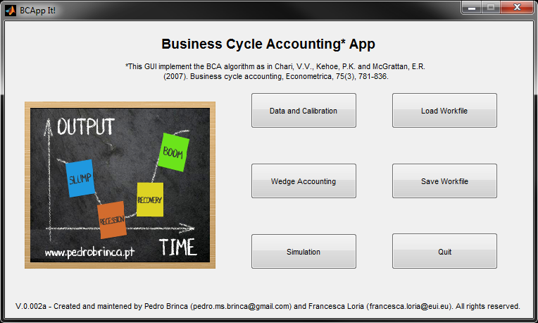
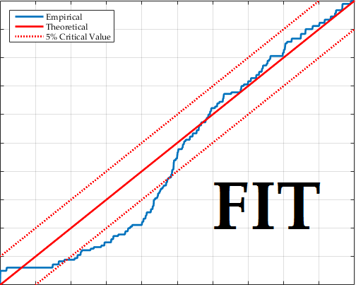

Software
BCAppIt!
Business Cycle Accounting, point and click. With Pedro Brinca.
BCAppIt! applies the Business Cycle Accounting procedure of Chari, Kehoe and McGrattan (Econometrica, 2007) through a graphical interface. The procedure shows which classes of models are worth developing to understand business cycle fluctuations in specific countries and historical episodes; the app makes it quick to run and accessible to a broader audience.
Each package includes the installer, a guide to the app and sample working files.

F.I.T. — Forecast Instability Tests
Forecast evaluation under instabilities. Developed with Barbara Rossi.
A MATLAB app for forecast evaluation tests in the presence of instabilities, for both point forecasts and forecast densities: the relative forecasting performance test of Giacomini and Rossi (JAE, 2010), the absolute forecasting performance test of Rossi and Sekhposyan (JAE, 2016), and the forecast density calibration test of Rossi and Sekhposyan (2017).
F.I.T. is also integrated in the BEAR toolbox developed by Alistair Dieppe, Romain Legrand and Björn van Roye at the ECB.
To request the toolbox, contact Barbara Rossi. For help installing or deploying it, contact me.

F.I.T. received funding from MINECO grant ECO2012-33247 “The Evolving Transmission of Cyclical Shocks: Methods and Empirical Analyses” and from the European Research Council under the EU Horizon 2020 programme (grant agreement No 615608).